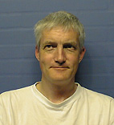

| Anders Ardö | and | Sigfrid Lundberg |
|---|---|---|
| Technical Knowledge Center & Library of Denmark, DTV |
NetLab, Lund University Library | |
| P.O. Box 777, DK-2800 Lyngby, Denmark |
P.O. Box 3, S-221 00 Lund, Sweden | |
| Phone: +45 4525 7347 | +46 46 222 3683 | |
| Email: and@dtv.dk | Email: sigfrid.lundberg@lub.lu.se |
In an attempt to implement a regional search engine we have created an open, metadata aware system for distributed, collaborative WWW-indexing. The system has three main components: a harvester (for collecting information), a database (for making the collection searchable), and a user interface (for making the information available). All components can be distributed across networked computers, thus supporting scalability. The system is metadata aware and thus allows searches on several fields including title, document author, and URL. Nordic Web Index (NWI) is an application using this system to create a regional Nordic web-indexing service. NWI is built using five collaborating service points within the Nordic countries. The NWI databases can be used to build additional services. Services today include special metadata databases, multimedia databases, and statistics about the Nordic Web.Keywords: search engines, metadata, multi-lingual, digital libraries, WWW harvesting
Much of the work presented here has been done in the context of DESIRE [8], an European Union project in the Telematics Applications programme, Telematics for Research which aims at the following (quote):
While developing the NWI, we have given interoperability the highest priority. The importance of the adherence to open standards and the free access to methodologies and knowledge on the Internet can not be exaggerated. This includes our WWW documents, which are not restricted to particular brands of WWW client.
However, interoperability does not end with World Wide Web and HTTP. For NWI, openness goes further: Information retrieval is made according to standard protocols, which makes it possible to cross search NWI with other bibliographic databases, such as library catalogs, for instance. In addition, all NWI software is freely available via the Net.
NWI's goals can be defined as the creation of a service that is continuously and automatically is identifying and indexing all information available on WWW in the Nordic domains. In order to achieve this end, the system must have these functions:
The harvester, which collects the information, starts by retrieving one page exactly the same way as an ordinary browser does it. A database is created by a program which analyzes the retrieved page and extracting parts to create a record in the database. All records in the database are indexed in order to make them searchable. The user interface presents each item in the result set with the title of the resource, a paragraph of text summarizing information form the resources, and a hypertext link to the original source.
As of November 1997, there are five NWI servers, one in each of the five Nordic countries (Table 1). They cover one country each, except for Denmark which also harvests from Greenland and the Faroe Islands. The total size of the combined databases is 4 - 5 million records.
| Country | Service URL | Service Provider |
|---|---|---|
| Denmark | http://nwi.dtv.dk/ | DTV |
| Finland | http://nwi.funet.fi/ | Funet |
| Iceland | http://nwi.bok.hi.is/ | National Library of Iceland |
| Norway | http://nwi.bibsys.no/ | Bibsys |
| Sweden | http://nwi.lub.lu.se/ | NetLab at Lund University Library |
W4 was followed by other related projects. Europagate [5] was one of those. In Europagate, the gateway-technology from the W4 project was developed further. A gateway can be described as a computer program which is translating between two communication protocols (the language computers speak to each other) in much the same way as a human being can interpret between, say, Swedish and English. There were also other developments, for example the Z39.50 protocol [18] replaced WAIS [19] for networked information retrieval.
The task of developing a harvesting component, and the integration of a database, a user interface and a gateway were made the pilot project NWI [6]. Through a number of service providers, one in each of the Nordic countries, the first version of the NWI system was realized early in 1997.That system is currently being developed further in a number of other projects, the most important ones are part of DESIRE [8, 9] (where NWI is the prime demonstrator) and NWI-II [7].
NWI-II aims at improving the existing service through the adoption of new standards and protocols, such as Dublin Core Metadata [20] in collaboration with the Nordic Metadata project [10]), and other technical improvements.
NWI technology is used in projects such as the Nordic Metadata project [10], Kulturarw3 [11], "All" Engineering resources on the Internet (EELS) [14] and the European Schoolnet (EUN) [15]. Other initiatives will draw upon the NWI and related technologies in the building of more specialized services within widely different areas.
Two related activities are Harvest and TERENA--TF-CHIC. Harvest [22] is one of the early and open projects trying to define a harvesting architecture for Internet. In addition, there is an interesting task force within TERENA (Trans-European Research and Education Networking Association) [12] -- TF-CHIC (Cooperative Hierarchical Indexing Coordination) [13] which is working on means of integration between different systems for harvesting, indexing and searching on the Internet. NWI, harvest and other projects are contributing to the TF-CHIC effort.
Through the distribution of data collection, as well as the provisioning of server functions, the network load exerted by a search engine can be minimized and its availability be maximized.
An important part of the architecture is an easy way to filter the sets of URLs to be indexed according to some subject or domain. Before a random set of URLs is loaded into the scheduler for processing, they are filtered through an external policy-filter. This filter, which is localized for each installation, determines what URLs are to be harvested given the policy adopted by the installation. It thus defines the region or domain a particular installation will cover. The current NWI services are basing their policy-filtering on network domains (i.e., *.se, *.dk, *.fi, ...) but it could be as complex as giving a list of servers and URLs to be included.
Policy-filtering uses a two step selection process. First a positive selection is done, ie selecting all URLs that constitute this region (for example all servers in the .dk domain, a list of selected servers or even more specific only certain directories on certain servers). Secondly this selection is refined by excluding not wanted URLs (for example cgi-scripts, binary files or a special directory on one server).
The overall architecture for NWI is shown in Figure 1. National service points have been established in all participating countries. Each service point has the responsibility for building and maintaining a database covering its country. The database is made available through the Z39.50 protocol [18] using GILS profile [25]. Z39.50 is an international standard protocol for searching bibliographic networked databases.
The basic architecture of NWI (see Figure 1) implies that, e.g. the Danish server collects information physically located in Denmark and builds a database of that information. In addition it will be responsible for the Danish user interface and also a networked Z39.50 interface to NWI servers elsewhere. NWI is using the Z39.50 based text search engine Zebra Information Server [21] together with the Europagate [5] WWW - Z3950 gateway. However, the service points could use any other system adhering to standards supported by NWI since most of the components can easily be replaced. And there are indeed local variations, both as regards user interface and configuration of the software.
Z39.50 and the gateway technology developed in Europagate [5] make possible simultaneous cross searching in several different databases. If one site should be inaccessible, then the corresponding database will be unavailable. However, the remaining of the databases will still be available, and users could turn to a user interface in a neighboring country.
Part of scheduler's task is performed by a subsystem called guard which keeps information on all URLs in a simple database. Guard makes decisions on whether any given URL may be retrieved, based on two conditions:
While analyzing each retrieved object, the robot will also create a list of all URLs encountered. The NWI URL-feedback cycle is completed by the submission of this list to the scheduler for indexing. Before submission the lists must be filtered through the policy filter to ensure that they fulfill the local selection criteria. Currently, this means that the objects to be indexed have to be stored on servers located in one of the Nordic domains. This feedback of URLs is used for resource discovery by the NWI system and will eventually lead NWI to all (linked) pages within its domain.
By default NWI does not store retrieved material in its original form. Instead the robot creates a database record corresponding to a catalog card in a library. The NWI record contains detailed structured information, both inferred and extracted. Extracted information is stored in fields corresponding to different HTML structures. All SGML entities (as ö for ö) are converted to ISO 8859-1 characters in order to make them searchable. For examples of HTML elements extracted to separate fields in the records see (Table 2)
| HTML element | HTML code | Representation in record |
|---|---|---|
| Metadata | <meta name="X" content="Y"> | <metaX> Y |
| Title | <TITLE> X </TITLE> | <ti> X |
| Headings | <Hx> X </Hx> | <dh> X |
| Links | <A HREF=" X ">Y | <li> X |
| Anchor texts | <A HREF="X"> Y</A> | <cp> Y |
| Other textual information except HTML comments and tags |
X | <ip> X</ip> |
In the following we will give an example on how a record is created from a small piece of HTML (Figure 3). How this piece of HTML is interpreted by the NWI robot is shown in Figure 4.
<html><head> <title>NWI test page</title> <meta name="DC.creator" content="Sigfrid Lundberg"> </head><body bgcolor="#FFFFEE"> <h1>Demonstration of NWI record format</h1> <a href="http://nwi.dtv.dk/">NWI</a> - a distributed search engine (söktjänst) for Nordic Web pages. <!-- Just a demopage --> </body></html> |
| Figure 3. A simple HTML page demonstrating how certain HTML structures are interpreted by the NWI robot |
In order to keep up with the rapid change of the Web, the database has to be updated continuously. Each record has to be checked against the corresponding object on the Net. Due to its inherent scalability based on distribution, the NWI demonstrator is capable of checking all 4 - 5 Million pages in about 1 - 2 weeks. In practice we do a complete round trip in about one month.
<nwi> <ti> NWI test page <dm> Fri Jul 18 11:41:54 MET DST 1997 <ci> nwi.dtv.dk/nwitest.html <si> <lc> Fri Jul 18 11:45:17 MET DST 1997 <by> 322 <srvr> Apache/1.0.5 <metadc.creator> Sigfrid Lundberg </si> <av> <avli> http://nwi.dtv.dk/nwitest.html <ty> text/html </av> <lsi> <dh> Demonstration of NWI record format </lsi> <ip> NWI - en distributed search engine (söktjänst) for Nordic Web pages. </ip> <cr> <li> http://nwi.dtv.dk/ <cp> NWI </cr> </nwi> |
| Figure 4. A simple record demonstrating how certain HTML structures have been interpreted by the NWI-robot. See Figure 3. |
The NWI user interface is accessed via the WWW. The user may also choose to simultaneously cross search of several regional databases, or to restrict the search to just one. The interface also guides the user to the server closest to his or her site. It is straight forward to adapt the user interface to local conditions, for instance to translate it to national languages. Hence NWI today, through local efforts, has a multi-lingual user interface, supporting five Nordic languages as well as English. In modern WWW clients supporting HTTP 1.1 [24], it is possible to give a ranked list of language preferences. That list is used for linguistic hand shaking between client and server, which is supported in recent versions of Netscape Navigator and Microsoft Internet Explorer. NWI also supports this way of selecting language.
The current NWI user interface supports two search modes, simple and advanced. Below we will demonstrate these in English and Swedish. The only options in the simple search form is the possibility to select one or several database(s). The default configuration of simple searches is using the Z39.50 BIB-1 attributes 4=105 and 5=101, implying ranked search and enabling truncation. These settings might easily be varied between countries reflecting local needs and preferences.
The advanced interface provides the user with a fielded searching. In this form, users can choose between a number of fields in a pull down <select> menu. Given that a user is searching for the string text, the different possible interpretations of that search are outlined in Table 3.
In addition, NWI offers an interesting scan facility in which hyper-linked term lists sorted alphabetically are generated on-the-fly by the server.
| A search in field | hits documents that | corresponding BIB-1 [30] or GILS [25] attributes | Comment |
|---|---|---|---|
| Free text | may have text in any field | 1=1016, 2=102 | Ranked search |
| Author | have text as an author name as given in document metadata | 1=1003 | Supports DC.author and authors included by various authoring tools like MS Frontpage and Netscape Gold |
| Title | in which text occurs in their HTML title | 1=4 | In the future, priority will be given to DC.title |
| URL | having an URL containing the string text | 1=2021 | GILS availableLinkage |
| Link | have text in an outgoing URL | 1=2047 | GILS crossReferenceLinkage |
| Anchor text | in which text occurs in an anchor text | 1=2046 | GILS crossReferenceTitle |
The fields can be combined with with a number of boolean and proximity operators. Currently ``and'', ``or'', ``but not'' are supported. Some sites also support the proximity operator ``near''. The default operator is ``and''.
Correct handling and searching of texts in the Nordic languages goes far beyond support for ISO8859-1. Our goals now include the implementation of stemming support in all of the languages. Furthermore, because most other search services, including the Nordic ones are commercial, the Nordic Web Index is intended to be a public service enterprise. We see it as an electronic counterpart to our countries National Bibliographies.
Metadata awareness is implemented in collaboration with the Nordic Metadata project [10], which aims, among other things, to make it easier for search engines to index the Nordic Web through the use of Metadata. Advocates for the use of metadata raises the issue: What should be searchable in a Web Index? Should it be possible to search for author, ISBN-number, title, a historical time period or geographical names that may be covered in, say, a thesis. Searches of this kind are currently impossible on Internet search engines, but are supported as matter-of-course in bibliographical databases and library OPACS. Why this difference?
Library OPACS keeps advanced data on data -- metadata. Librarians have created formal descriptions for each item in the database, and in doing that they have followed carefully standardized procedures. If we want to reach similar precision when searching the Internet, then someone will have to do that same level of description on the Net. The main questions become: Who shall do the job, and who shall pay the one doing it? The simplest and cheapest solution as to let the authors include this data themselves.
Dublin Core is a standardization initiative aimed at just this, simplified description of electronic material, and it is the fruit of discussions in a group of knowledgeable people, such as librarians, archivists, computer scientists and others. The problem to solve has been to find that set attributes that can be used with a minimal effort to describe what has been labelled as `document like' objects. In a series of workshops, there have been discussions on special problems arising when describing texts, images and multimedia. By December 1996 a consensus solution was established comprising fifteen elements. Although Dublin Core is not to be regarded as a formal standard both public and private sector organizations follow suit and acknowledge the need for a simple metadata standard. Other related initiatives like GILS [25] attempt to coordinate their efforts with DC. Dublin Core 1.0 have been documented as an "Internet draft" [16], and is on its way to be established as an Internet standard.
Together with the Nordic Metadata Project we have made some measurements on the occurrence of metadata in the Swedish WWW. Metadata are now fairly common on the Worldwide Web (Table 4). Currently the robot only extracts embedded metadata available in html metatags, as authors and web-masters start embedding RDF metadata [23] we will add that to the reptoire of the parser.
| Tag | Occurrence | |||
|---|---|---|---|---|
| September 1996 (17,000 pages) |
April 1997 (114,408 pages) | |||
| Relative frequency | Number in sample |
Relative frequency | Number in sample | |
| description | 51% | 8670 | 31% | 34936 |
| keywords | 51% | 8636 | 43% | 49689 |
| resource-type | 47% | 7937 | 3% | 3488 |
| distribution | 46% | 7884 | 3% | 3915 |
| generator | 36% | 6101 | 64% | 74109 |
| author | 16% | 2640 | 15% | 17026 |
| build | 3% | 421 | 1% | 795 |
Indeed we consider the occurrence of such metadata high enough to warrant the building a metadata based search service. From the NWI we have exported metadata from the Swedish and Danish harvesting databases into two separate Dublin Core databases. Since only a small proportion of the data is Dublin Core in its original form, we have transformed the attributes found to their semantically closest Dublin Core counterpart. The transformations that is performed depend on the current distribution and abundance of metadata fields [31]. The metadata is exported from the NWI database, attributes transformed as mentioned and the result is a database with records in SOIF format [26]. Those interested may inspect one example of HTML-encoded metadata and the resulting Dublin Core SOIF template [28].
In creating the database the exporting software is actually filling some gaps with inferred information. The URL were, for instance, taken from the harvesting database rather than the metadata (after all, the URL from the harvesting database had been verified just recently). The resulting databases are available for testing [29].The metadata searches are done using Z39.50, but in these two databases we are experimenting with a search interface using the extended tagset-G proposal [27] and the BIB-1 [30] attribute set. The mappings can be inspected in Table 5.
| Z39.50 | Metadata Mappings | |||
|---|---|---|---|---|
| Tagpath | Tag | BIB-1 attribute | US Marc | Dublin Core |
| (2,21) | subject | Subject-Heading | 653 a | Subject |
| (2,1) | title | Title | 245 a | Title |
| (2,2) | author | Author | 720 a | Author or creator |
| (2,31) | publisher | Publisher | 260 b | Publisher |
| (2,32) | contributor | Author | 720 a | Contributor |
| (2,4) | date | Date | 260 c | Date |
| (2,3) | format | Content-type | 856 q | Format |
| (2,4) | resourceType | Material-type | 655 a | Resource type |
| (2,28) | identifier | Doc-id | 856 u | Resource identifier |
| (2,30) | relation | - | 787 n | Relation |
| (2,33) | source | Host-item | 786 n | Source |
| (2,20) | language | Code-language | 041 a | Language |
| (2,34) | coverage | - | 500 a | Coverage |
| (2,17) | description | Abstract | 520 a | Description |
There have been some discussions concerning a structuralistic and a minimalistic approach to Dublin Core metadata. The tension between these two camps was mostly resolved at the Canberra Dublin Core workshop (March 1997) and implied that a Dublin Core substructure could be used to refine the semantics of an element but must never be used to extend its meaning. A search engine should thus be able remove all substructure and lump all of it into the base elements. This is exactly what we are doing in SweMeta and DanMeta. When converting metadata generated by HTML authoring tools like MS Frontpage and friends, this approach is mostly sufficient. However, the lumping of metadata can be very confusing for users. For instance, in our minimalistic databases street names may turn up when a user makes Z39.50 scan in the author field, because we have collapsed all DC.Creator.Address-like fields into DC.Creator. There are other side effects, for instance the US-MARC record syntax tend to become a bit confusing, since the value may contain a haphazard collection of information extracted from incompatible fields.
The DESIRE Web indexing technology makes it possible to create databases based on other domains than geography and networking. By initializing the robot with the URLs of a number manually maintained link collections within a given area, and proceeding two or three steps from there, and given sufficiently high quality and coverage of the inocculum link collection, one might this create a database containing if not `all' resources within the area so at least those with a high linkage.
We have used this method for creating the the `All' engineering database [14], which is a part of the Engineering Electronic Library. Our experience from this is that it has been a fairly straightforward task to generate a database with tens of thousands resources, and that the precision in searching such a database much higher than what is achievable in a general Web index.
The DESIRE project has been supported by the European Commission, other sponsors of the DESIRE harvesting and indexing initiative has been Nutek, FRN and Sunet. The NWI project has been supported by NORDINFO, BTJ, and BIBSAM. We would like to thank our partners BIBSYS, FUNET, National library of Iceland, and IndexData. Lars Nooden commented upon the manuscript and improved the english.
|  Anders Ardö has a background in Computer Systems with a PhD 1986 in Computer Systems Engineering and he was working as Ass. Professor in Computer Engineering at Lund University 1986 - 1994. Since 1992 he is working with developing electronic library services first at Lund University Library, Development department (LUB NetLab) were he was department head from 1994 - 1996. From 1997 he is head of development at the Technical Knowledge Center & Library of Denmark. | Sigfrid Lundberg earned his Ph. D. 1985 in zoological ecology, specializing on applying dynamical systems theory to evolutionary biology and population dynamics. After having got an untenured position `docent' in theoretical ecology, he started a new career within electronic library development work at Lund university Library. |